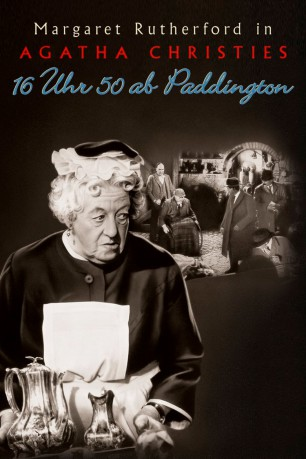

#10782 Miss Marple 1 - 16 Uhr 50 ab Paddington
Alternativ: Murder She Said (Englischer Titel)
 
 IMDB-Wertung: 7.4 / 10
IMDB-Wertung: 7.4 / 10  Metascore: 0
Metascore: 0 
Aus dem Fenster ihres Abteils beobachtet Miss Marple, wie in einem vorbeifahrenden Zug eine junge Frau ermordet wird. Sie alamiert die Polizei, doch die glaubt ihr kein Wort. Sollte sie alles nur geträumt haben? Mit Scharfsinn, Witz und Intuition nimmt die schrullige alte Lady den Fall selbst in die Hand...
Jahr: 1961
Dauer: 81 Minuten
FSK: 12
Land: England Studio: Warner Home VideoTonspuren:
Untertitel:
Auflösung: 1080p (1920x1080) Größe: 4628 MB
Genre: Drama, Komödie, Krimi, Mystery
Regisseur: George Pollock
Drehbuch: Agatha Christie, David D. Osborn, David Pursall, Jack Seddon
Soundtrack: Ron Goodwin
Darsteller:
- Margaret Rutherford als Miss Marple
 Arthur Kennedy als Dr. Quimper
Arthur Kennedy als Dr. Quimper- Muriel Pavlow als Emma
 James Robertson Justice als Ackenthorpe
James Robertson Justice als Ackenthorpe- Thorley Walters als Cedric
- Charles 'Bud' Tingwell als Craddock
- Conrad Phillips als Harold
 Joan Hickson als Mrs. Kidder
Joan Hickson als Mrs. Kidder- Gerald Cross als Albert
 Richard Briers als 'Mrs. Binster'
Richard Briers als 'Mrs. Binster'- Nadia Pavlova als Murder Victim (uncredited)
- Martin Stephens als Alexander (uncredited)
- Ronald Howard als Eastley
- Stringer Davis als Mr. Stringer
- Ronnie Raymond als Alexander
- Michael Golden als Hillman
- Barbara Leake als Mrs. Helen Stainton
- Gordon Harris als Bacon
 Peter Butterworth als Ticket Collector
Peter Butterworth als Ticket Collector- Lucy Griffiths als Lucy
- Aileen Lewis als Train Passenger (uncredited)
- Ned Lynch als Detective (uncredited)
Datei: X:\4-Tetralogie(M-Z)\Miss Marple\Miss Marple 1 - 16 Uhr 50 ab Paddington (1961, FSK12, 1920x1080).mkv seit 22.02.2019
Festplatte: HD Collection-3(N-Z)-6(A-Z)
 Es gibt insgesamt 7 Filme in der Gruppe '4-Tetralogie(M-Z)\Miss Marple'
Es gibt insgesamt 7 Filme in der Gruppe '4-Tetralogie(M-Z)\Miss Marple'